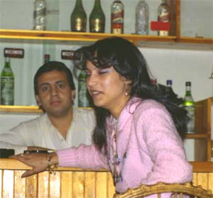

１９８５年１２月頃にアレキサンドリアで大ヒットした音楽です。歌手はダリダでフ ランス生まれのエジプト人です。ダリダはシャンソン歌手として活躍していましたの でシャンソンのＣＤを出版しているようです。ベリーダンスのリズムに乗せて、イス カンダリア ハッサン ナースと盛んに歌っています。これは「アレキサンドリア人 は良い人」となるのでしょう。 この写真の女性は「世界の戯れ言 美人を見て眩暈が・・」に登場しています。 もう一つの曲「ヤバーニ」は日本人のことで勤勉な事を讃えているようです。彼らに 初めヤバーニとかヤバンと言われると「野蛮」に聞こえ、昔「毛唐」「野蛮人」と外 人を中傷していたのに通じ、遂「俺は野蛮人ではない」と言い返したくなりました。 国内での入手は残念ながら出来ません。